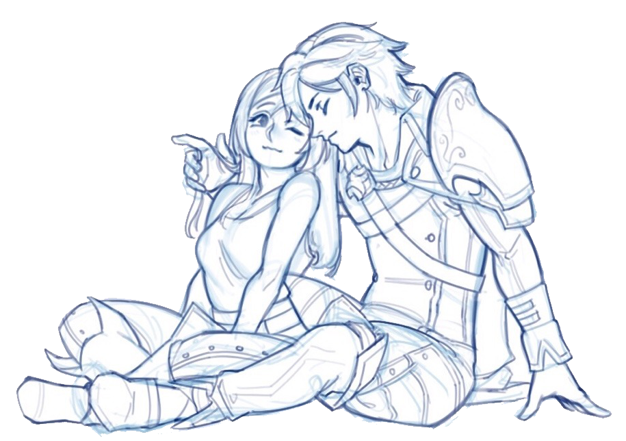
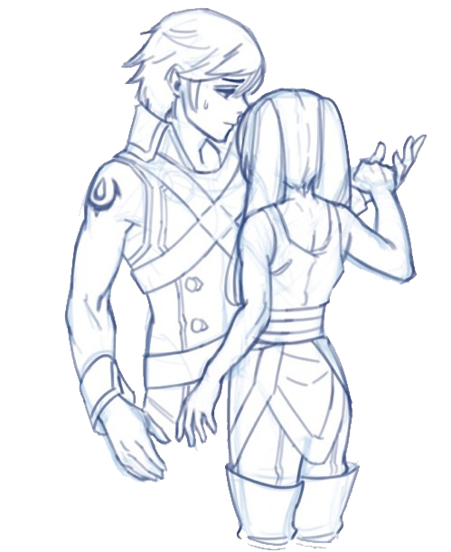
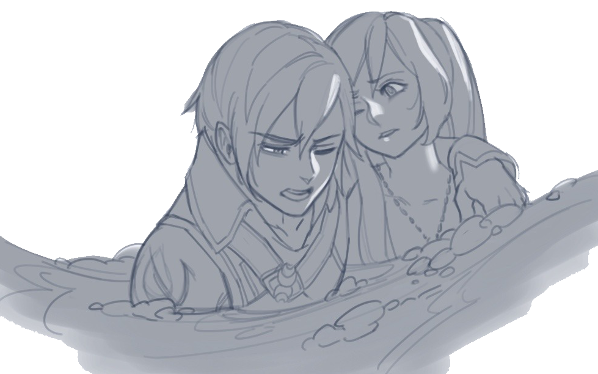
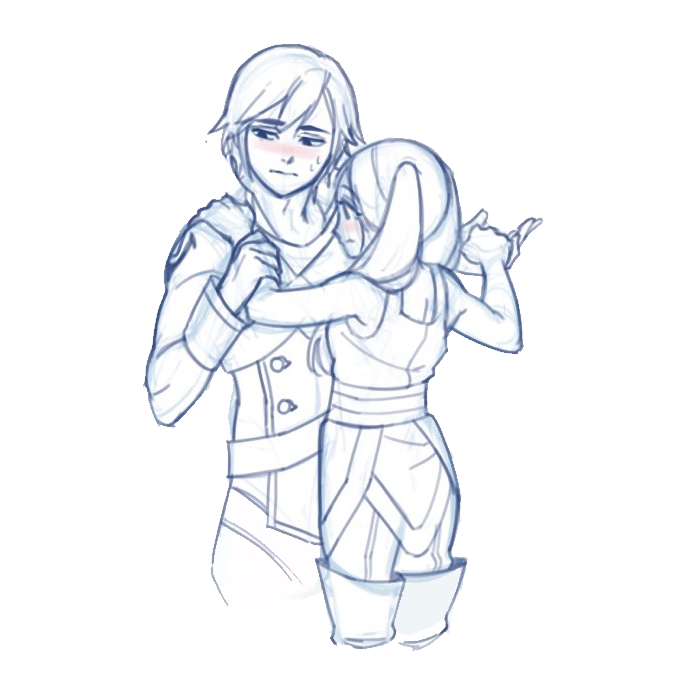
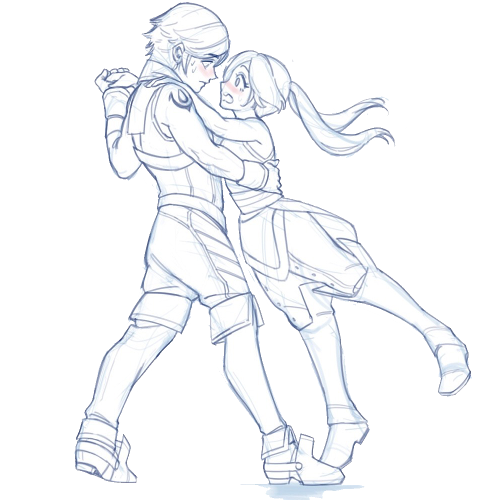

Welcome to Dewside
Chrobin Fanfic Hall of Fame
All art you see on this page (barring the background), is used with permission by the lovely Hollyfig!

This here is a growing collection of the best Chrom/Robin fics I've read to date. Enjoy!
The Cream of the Crop
While I genuinely love every fic listed on this page, the following entires are pieces that truely rise above the competition for one reason or another.
Word count: 410,000+
Chapters: 71/?
Status: Active
Summary given by author: "A young woman wakes up in a field with no memory of how she got there, and unable to speak. But the loss of her voice soon becomes the least of her worries"
My review: This fic. This fic. This fic is a PRIME example of how good a piece of fanfiction can get. The characters are brimming with personality, and serve as unique yet faithful adaptations. The story is full of intrigue, and the writing is compelling and beautiful. There's this one scene at the end of act one that really gets to me, and I'd love to adapt it into a comic or animatic when I have the time.
(Spoilers ahead-- I'm not exactly sold on Reflet as a character, and so far I'm really not sure how I feel about her subplot, but I am excited to see if BucketsOfButterflies can change that in the coming chapters.)
Word count: 12,922
Chapters: 10
Status: Complete
Summary given by author: "Time after time, life after life, Chrom will follow Robin."
My review: Chrom follows Robin though a time-loop of death and rebirth, learning that he loves her no matter the form she takes. Very engaging, quick paced, and has a sweet message about trust and letting go.
Word count: 229,898
Chapters: 46/70
Status: Active
Summary given by author: "The sea delivers strange things to the tides of Ylisse, and the rag-tag sailors who patrol the island nation’s borders. One of them is an amnesiac woman named Robin, who lands in the company of Chrom and his ship, the Shepherd. And with an ancient power stirring beneath the waves, and a lost link between Ylisse and the ocean depths, a growing love between them is the least of their worries!"
My review: CHROBIN. FREAKIN. MERMAIDS.
NEED I SAY MORE??? 
Word count: 3,921
Chapters: 2
Status: Complete
Summary given by author: "Chrom is awakened in the night and discovers someone else is also stirring at this late hour. A chance meeting gives the two time to discuss their relationship and their lives after the war."
My review: Say it with me: "awwwwwww!"
Oneshots
For a shorter, straight-to-the-point experience.
Word count: 2,572
Summary given by author: "Robin couldn’t remember having a childhood. She couldn’t remember doting parents or their busy hands or fretting voices making a fuss over her. The closest she ever came to that feeling was Frederick.”
My review: This one is a liiiittle bit like cheating, since Chrobin serves only as the base for this fic, but I can't bare to leave it off the list! It's sweet and the bond between Robin and Frederick is really endearing, and it's just a good read.
Word count: 2,684
Summary given by author: “Robin’s coat has pockets. For some reason, the thought is baffling.”
My review: This fic is short, cute, goofy, and sweet all at the same time. I love it.
Other
I... don't know what to call this catagory, yet.
Word count: 23,417
Chapters: 10
Status: Complete
Summary given by author: "Hired on as Princess Lissa's "official tutor in maths, history and assorted elements", Robin Kite is thrust into the world of nobility and dignity - along with dealing with Prince Chrom's flirtations, inadvertent as they are."
My review: Really, the best term I can think of to describe this fic is "enjoyable". Everything here is enjoyable! It's a fun romp through a modern setting, and the way the author weaves together math, history, and magic is unique and a legitimately interesting concept.
Word count: 333,777
Chapters: 71
Status: Completed
Summary given by author: "Ylisse carries a history of dragons, and stories whisper of their powers mingling with Exalts and Grimleal. To a prince and tactician they are only tales, until a fateful night burns away myth and makes it all too real. Together they will have to face down kings, conquerors, and what lurks in their own blood.”
My review: This one's just plain, good fun. A self proclaimed “door-stopper fantasy”, and boy does it live up to that title! This fic has it all: dragons, shapeshifting, epic battles, and a satisfying conclusion.
Word count: 1,385+
Chapters: 1/4
Status: Active(?)
Summary given by author: "Robin: Tactical genius by day, clueless dumbass by night.
In which Robin discovers Chrom's new favored reading genre and immediately assumes the worst."
My review: So, I actually didn't realize that this is intended to be more than a oneshot until I was writing this entry, and I'm excited to see more! This chapter stands on its own as a cute (and frustrating) story of mutual pining between complete dorks.